¡Hola! Soy David. Una de las cosas que más me frustra es ver cómo un computador perfectamente bueno se vuelve lento e inusable solo porque el sistema operativo → (casi siempre Windows →) se vuelve demasiado pesado con los años. Es como intentar hacer correr a alguien con una mochila llena de piedras. Me puse a investigar y descubrí que no tienes que botar tu equipo: puedes quitarle la mochila pesada instalando un sistema libre y ligero llamado Linux →. Aquí te enseño cómo hacerlo paso a paso.
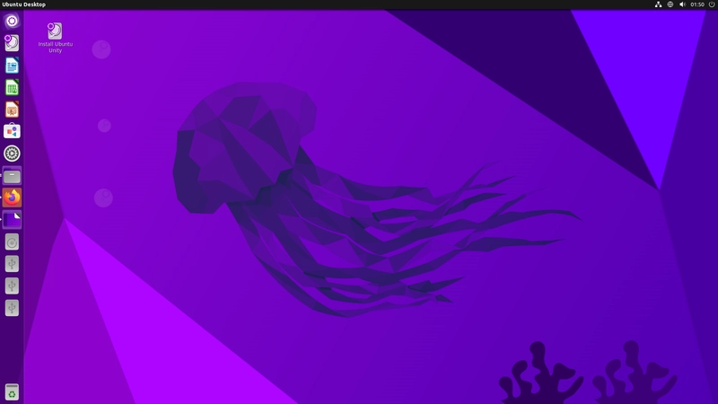
¿Qué es instalar Linux → Ubuntu?
Es cambiar el programa principal que hace funcionar tu computador. Ubuntu es una de las versiones (o “sabores”) de Linux → más amigables y fáciles de usar. Reemplaza por completo tu sistema anterior con uno nuevo, gratuito y mucho más ligero.
¿Para qué sirve?
Sirve para revivir ese computador viejo que tienes guardado porque “ya no anda” o “es muy lento”. Al instalar un sistema que exige menos recursos, el equipo volverá a encender rápido, podrás navegar por internet → sin que se te trabe, y podrás usar programas de oficina gratuitos. Es una forma excelente de evitar generar basura electrónica y ahorrar dinero.
Antes de empezar…
Atención: Este proceso borrará absolutamente todo lo que hay en tu computador y en la memoria USB → que utilices. Asegúrate de guardar tus fotos, documentos y archivos importantes en otra memoria o en la nube antes de empezar.
¿Qué necesitas?
- Un computador viejo (que aún encienda).
- Una memoria USB → vacía de mínimo 16GB.
- Conexión a internet → (para descargar los archivos iniciales).
- Un poco de paciencia (la descarga y la instalación toman tiempo).
¿Cómo hacerlo?
Paso 1 → Descarga los archivos necesarios
Para empezar, necesitas descargar dos cosas de internet. Primero, el instalador de Linux Ubuntu. Ve a su página oficial ubuntu.com y busca la sección de descargas (“Download”). Guarda el archivo en tu computador.
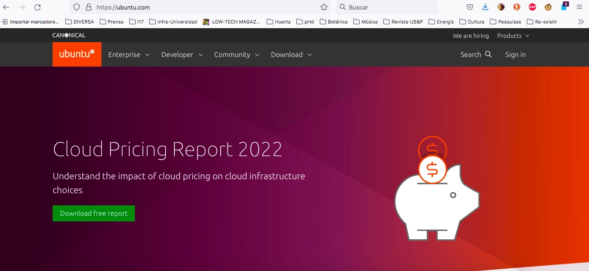
Segundo, necesitas un programa gratuito llamado RUFUS. Este programa nos ayudará a meter el instalador en la USB de una forma especial. Descárgalo en rufus.ie/es/.
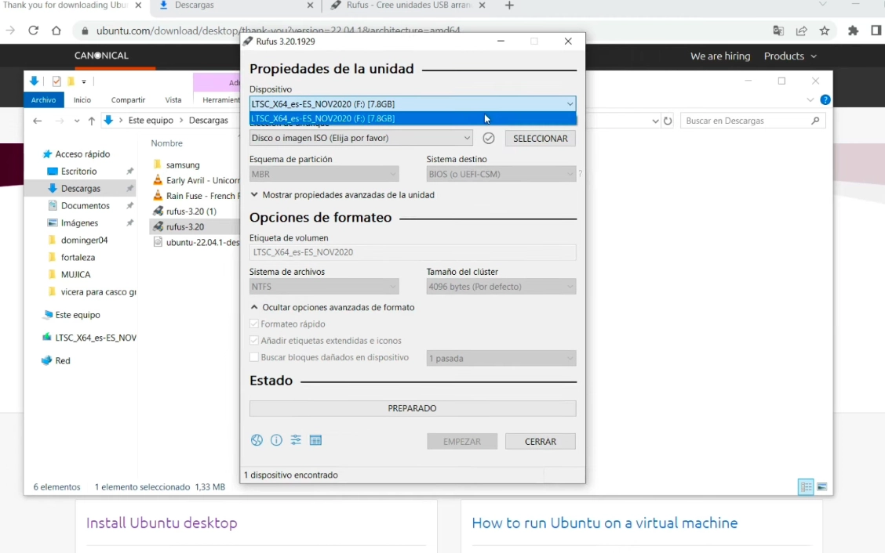
Paso 2 → Prepara la memoria USB
Conecta tu memoria USB al computador. Recuerda que todo lo que tenga adentro se borrará. Abre el programa RUFUS que acabas de descargar (no necesita instalarse, solo se abre).
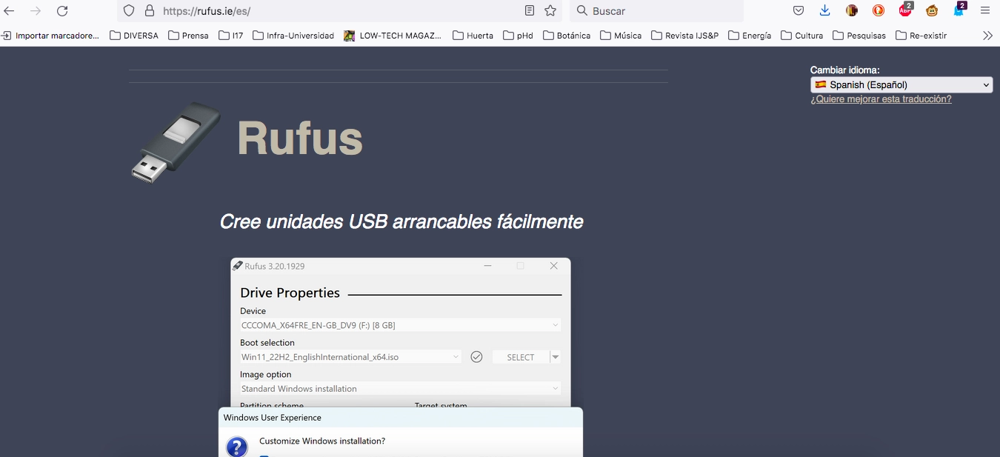
En RUFUS, asegúrate de que tu USB aparezca seleccionada arriba. Luego, haz clic en “Seleccionar” y busca el archivo de Ubuntu que descargaste en el paso 1. Finalmente, haz clic en “Empezar”.
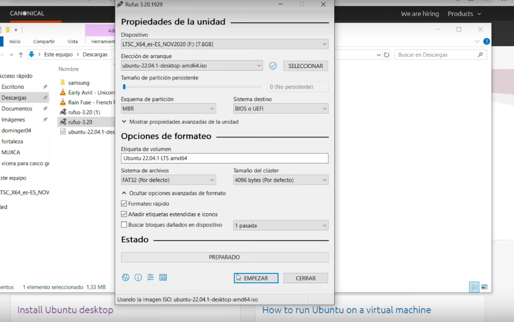
Vas bien: Espera unos minutos a que el programa termine. Sabrás que está listo cuando la barra verde se llene y diga “PREPARADO”. ¡Ya tienes tu USB lista para instalar!
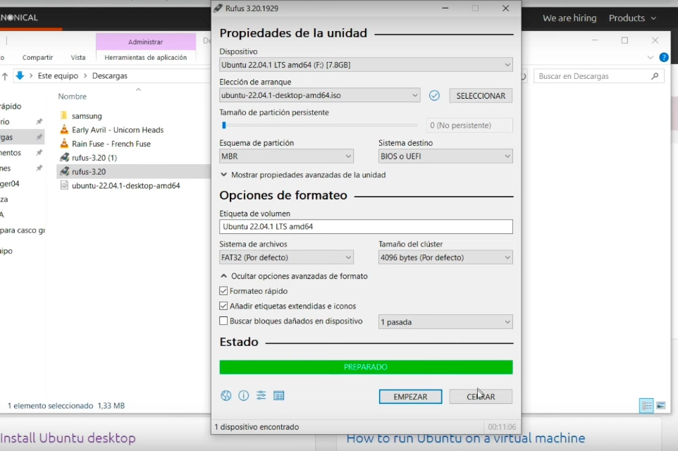
Paso 3 → Inicia el computador desde la USB (Bootear)

Ahora viene el paso que asusta a muchos, pero es sencillo. Apaga el computador viejo. Conéctale la USB. Al encenderlo, debes presionar repetidamente una tecla específica (usualmente F12, F2 o Esc) antes de que cargue el sistema viejo, para que te aparezca un menú de arranque (Boot Menu).
Consejo: Si no sabes qué tecla es, busca en tu celular: “Cómo acceder al boot menu en [marca de tu computador]“.
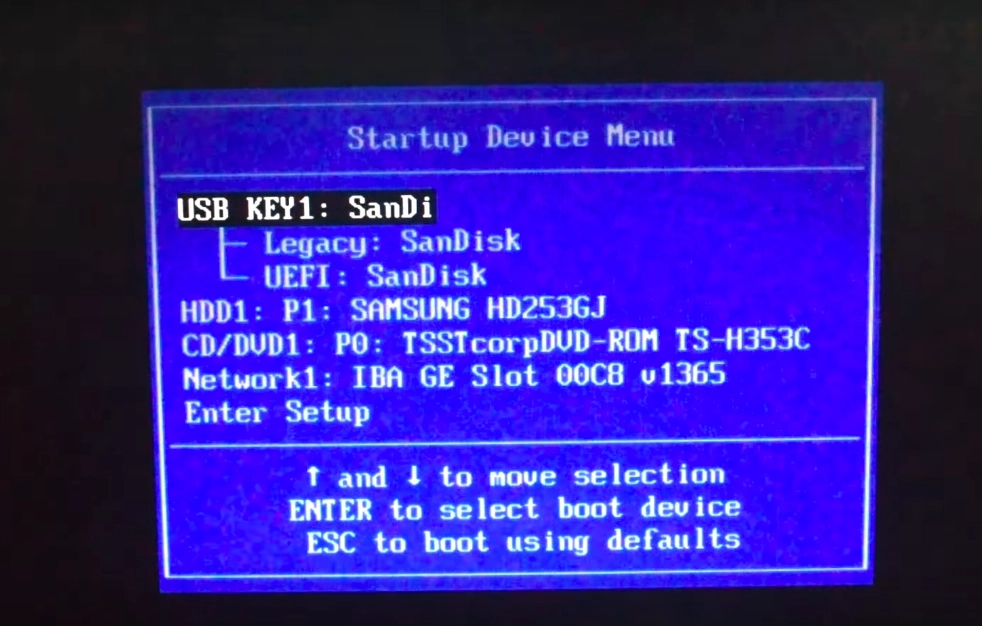
En este menú, usa las flechas del teclado para seleccionar tu memoria USB (suele tener el nombre de la marca de la memoria o decir “USB Device”) y presiona Enter.
Paso 4 → Comienza la instalación
Si lo hiciste bien, aparecerá un menú negro con letras blancas. Selecciona la opción “Try or install Ubuntu” (Probar o instalar Ubuntu) y presiona Enter.
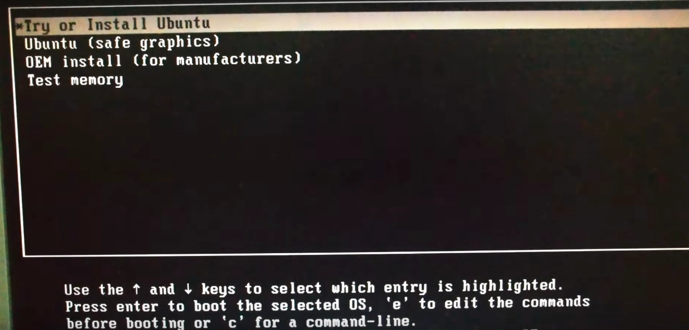
Después de unos segundos, aparecerá una pantalla gráfica. A la izquierda, busca y selecciona tu idioma preferido (Español). Luego haz clic en el botón grande que dice “Instalar Ubuntu”.
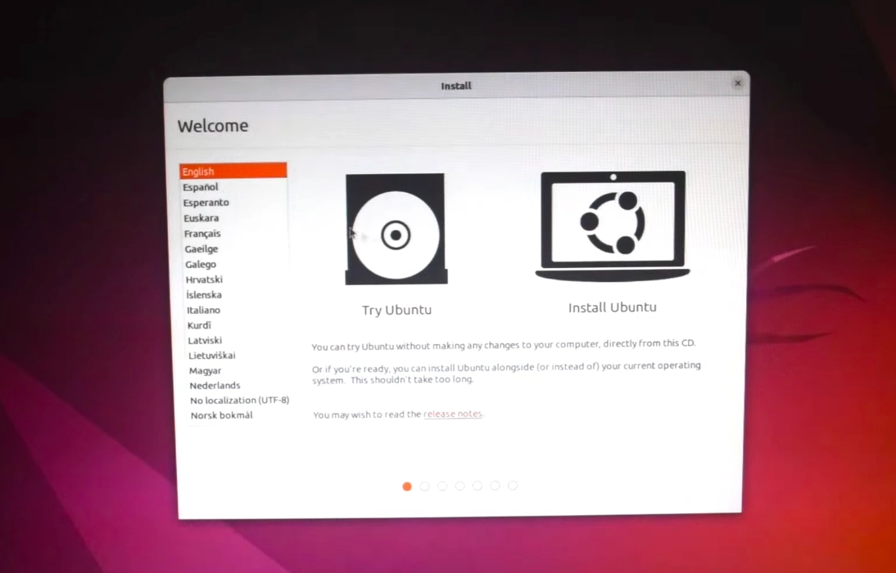
El sistema te pedirá probar la distribución de tu teclado. Escribe algunas letras (como la “ñ” o signos de puntuación) para asegurarte de que funcionen correctamente.
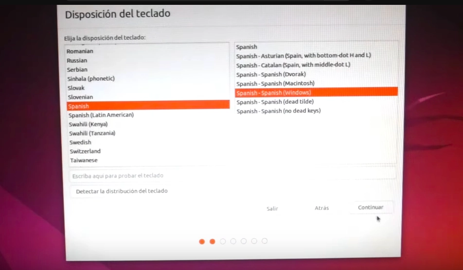
Paso 5 → Borra el disco viejo e instala Ubuntu
Llegarás a una pantalla que te pregunta el “Tipo de instalación”. Para dejar tu computador como nuevo y borrar cualquier rastro de Windows y sus problemas, selecciona “Más opciones” o “Borrar disco e instalar Ubuntu” (si te aparece esta opción directa, tómala).
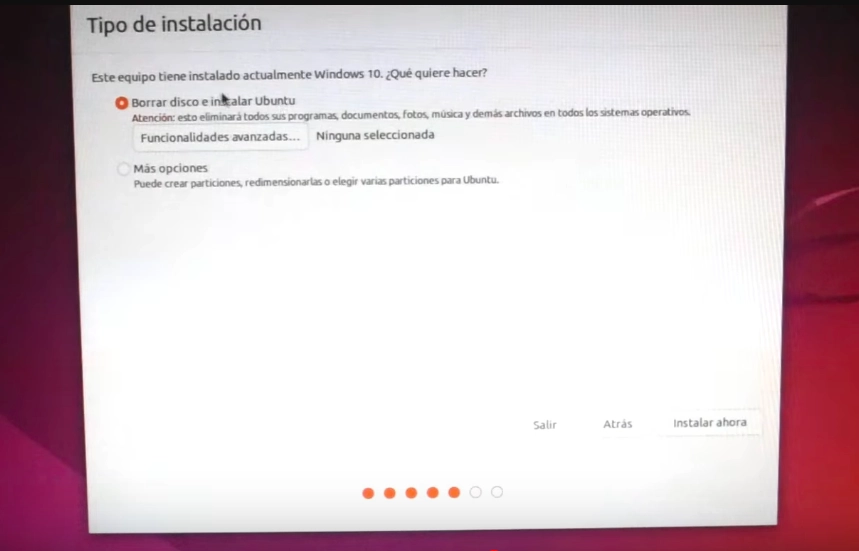
Si usaste “Más opciones”, verás una lista de divisiones (particiones) de tu disco duro → viejo. Selecciónalas una por una y presiona el botón con el signo menos (”-”) hasta que no quede ninguna, para limpiar la casa por completo.
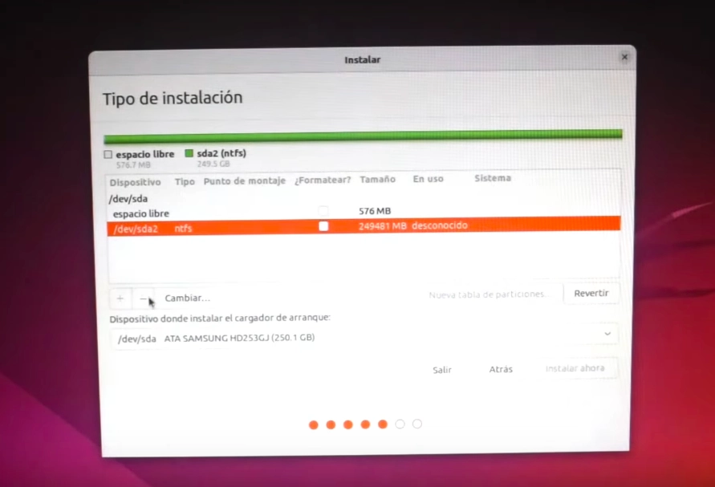
Luego, puedes volver atrás y seleccionar la opción recomendada: “Borrar disco e instalar Ubuntu”. Haz clic en “Instalar ahora”.
Mi sugerencia es que si no has hecho el backup de tu disco este es el momento, mi recomendación es hacer una partición en el botón de nueva partición en el disco mas grande, deja por lo menos 40gb para Linux, y con eso puedes pasar los archivos de un sistema al otro.
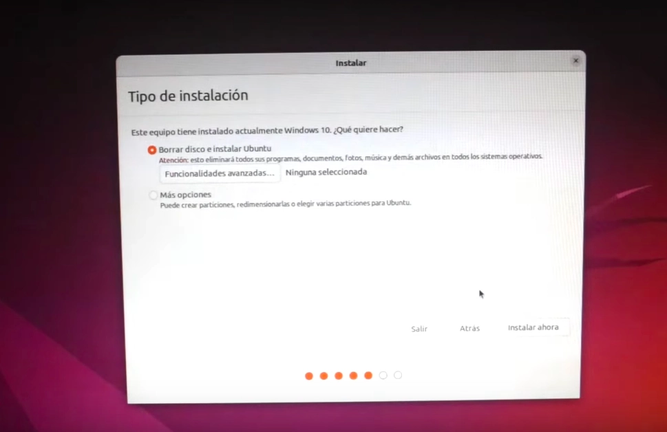
Ánimo: Te saldrá una ventana de advertencia diciendo que se sobrescribirán los discos. Es normal que dé miedo, pero es el sistema confirmando que estás seguro de borrar todo lo viejo. Haz clic en “Continuar”.
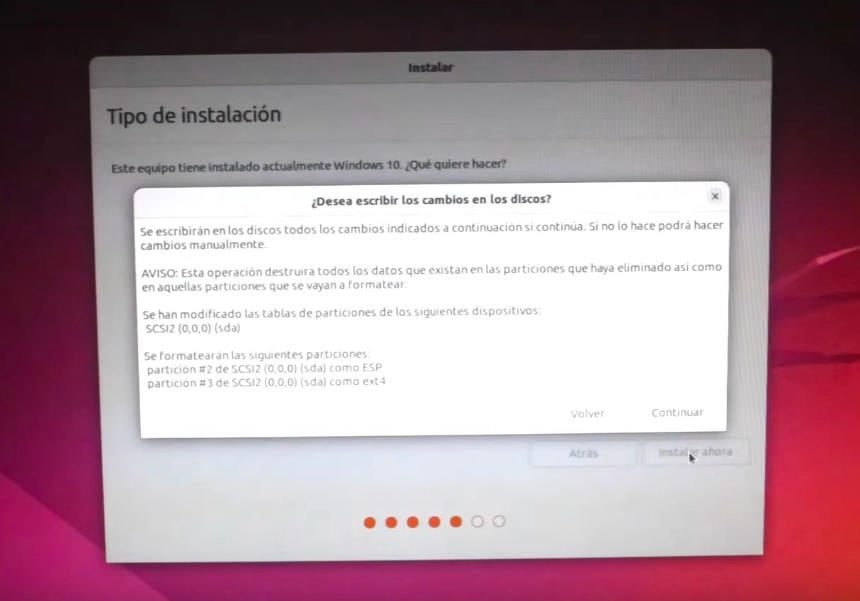
Paso 6 → Configura tu usuario y ubicación
El sistema te preguntará dónde te encuentras para configurar la hora correcta. Haz clic en el mapa y presiona continuar.
Te aparecerá un botón, busca Bogotá (Colombia) o la capital de tu país, para tener la hora local.
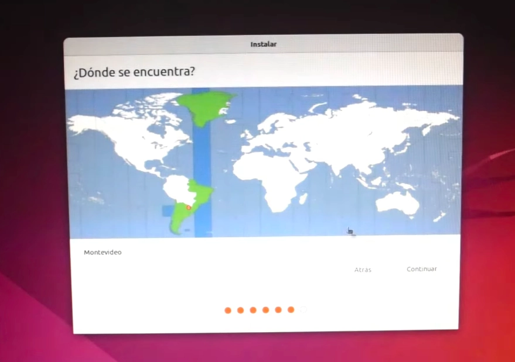
Ahora, elige un nombre para tu computador, tu nombre de usuario y una contraseña. ¡No la olvides! Esta contraseña es tu llave para el equipo. Puedes elegir si quieres que te la pida siempre al prender el equipo o que inicie sesión automáticamente.
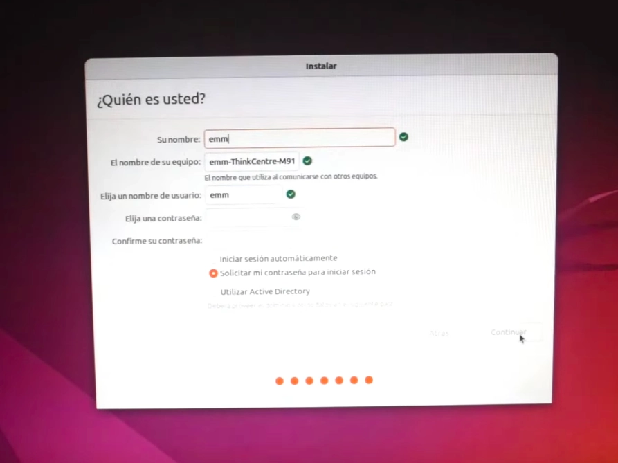
Paso 7 → Finaliza y reinicia
Ahora solo queda esperar. El sistema copiará todos los archivos necesarios. Puedes prepararte un café mientras miras las imágenes que te muestran qué cosas nuevas trae el sistema.
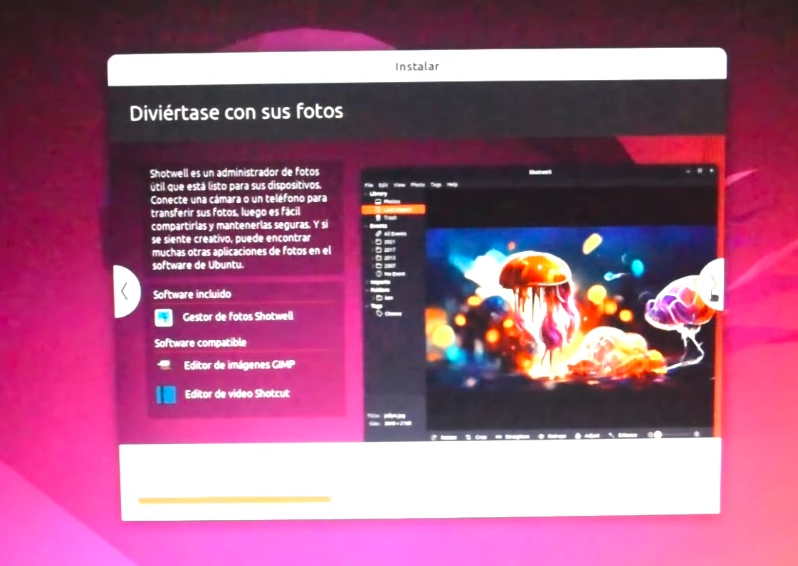
Vas bien: Cuando termine todo, te saldrá un mensaje diciendo “Instalación terminada”. Haz clic en “Reiniciar ahora”.
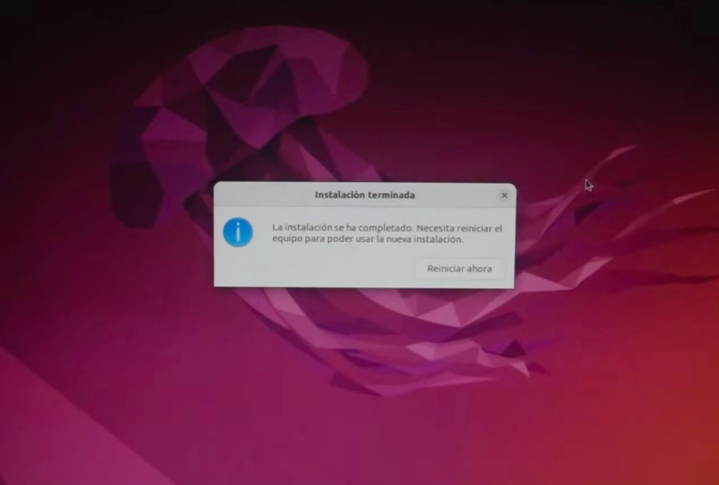
La pantalla se pondrá negra y te pedirá, en inglés, que retires el medio de instalación (“Please remove the installation medium, then press ENTER”).
Saca tu memoria USB y presiona Enter.
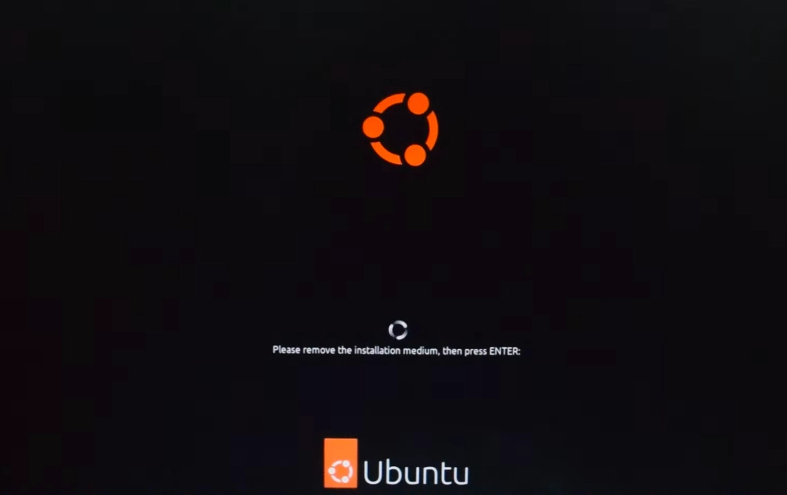
¡Y listo! Tu computador encenderá con su nuevo sistema, fresco, limpio y veloz.
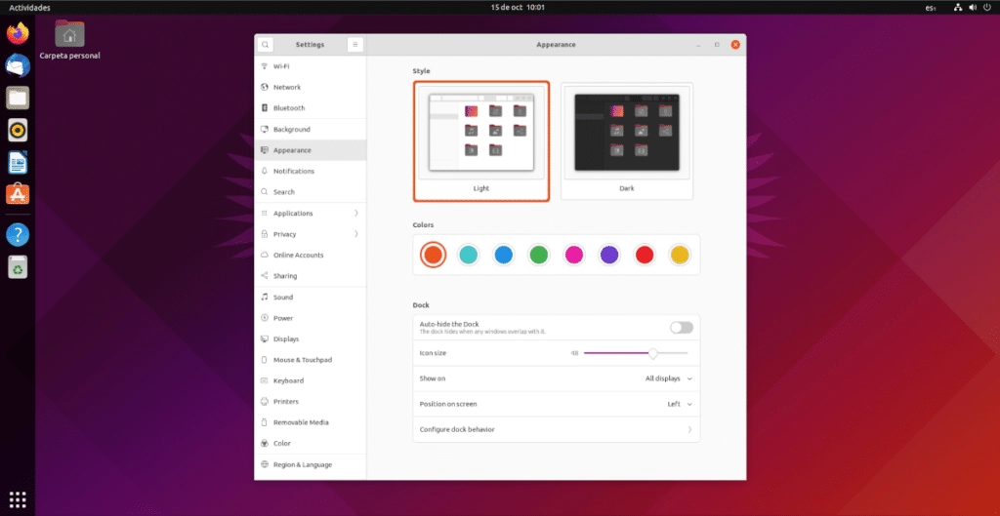
Recomendaciones si te estancas
- Si tu computador no reconoce la USB y siempre inicia en Windows, revisa si tienes una opción llamada “Secure Boot” activada en tu computador (en la misma pantalla donde entraste al Boot Menu). A veces hay que desactivarla para poder instalar sistemas nuevos.
- Si ves que Ubuntu sigue siendo un poco lento para tu computador (porque es muuuy viejo), existen versiones aún más ligeras como Lubuntu o Xubuntu. El proceso de instalación es exactamente el mismo.
¿Cómo saber si funciona?
Al prender el computador sin la memoria USB conectada, ya no verás el logo de Windows. En su lugar, verás el logo de Ubuntu y llegarás rápidamente a un escritorio limpio y funcional donde puedes conectarte a internet y navegar sin problemas.
Otros internets posibles
Podrás poner a disposición de la comunidad equipos que la gente creía dañados u obsoletos. Al no depender de licencias costosas ni necesitar los últimos Procesador (CPU) → del mercado, cualquier grupo puede armar una pequeña sala de computadores reciclando tecnología que otros desechan. Es un acto de independencia tecnológica.
Soluciones recomendadas
- ¿Cómo elegir un buen computador para la comunidad? →
- ¿Cómo compartir internet desde tu computador a otros? →
Referencias
- Video guía de instalación (YouTube): Tutorial Instalación Ubuntu
Ya le diste a ese computador una nueva oportunidad de ser útil. A veces, las cosas solo necesitan que las miremos desde otra perspectiva para volver a brillar.